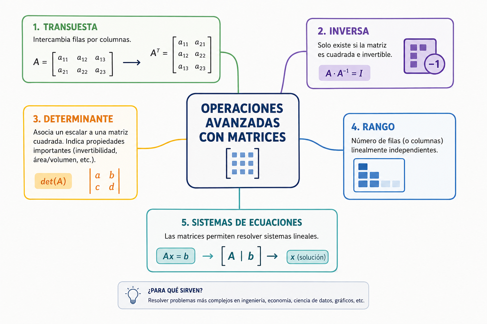

En el procesamiento de gráficos en 3D para simulaciones espaciales o filtros fotográficos, transformar una imagen vertical a una posición horizontal implica rotar sus pixeles. Matemáticamente, esto equivale a transponer una matriz: convertir todas sus filas en columnas. Dominar el recorrido selectivo de una matriz (como extraer únicamente su diagonal principal) permite acelerar los cálculos de inteligencia artificial y física avanzada.
⚠️ Debes visualizar el video completo sin adelantar para desbloquear la evaluación.
Material audiovisual adaptado con fines estrictamente educativos. Créditos del autor: Sincronizacion del conocimiento.

Más allá de almacenar datos en celdas individuales, la ingeniería de software requiere operar las estructuras bidimensionales de forma colectiva mediante álgebra lineal y algoritmos de filtrado selectivo.
i == j). Recorrerla solo requiere un único ciclo simple en lugar de bucles anidados, reduciendo el consumo computacional.matriz[i][j] se reasignan ordenadamente a la posición invertida de una matriz de destino matriz_transpuesta[j][i].Dentro de una matriz cuadrada de 5x5, ¿qué condición lógica formal determina que una celda forma parte exacta de la "Diagonal Principal"?
Si un algoritmo procesa una matriz invirtiendo el orden de sus celdas mediante la lógica `destino[j][i] = origen[i][j]`, ¿qué operación avanzada se está ejecutando?
Según Sznajdleder (2012), ¿qué característica define estrictamente a una "Matriz Cuadrada"?
¿Cuál es el beneficio computacional directo de recorrer únicamente la diagonal principal de una matriz cuadrada?
Si estamos en la coordenada `matriz[2][2]` de una estructura cuadrada, ¿pertenece este casillero a la diagonal principal?
De acuerdo con Joyanes Aguilar (2013), la permutación ordenada de las coordenadas de filas por columnas representa la definición matemática estricta de:
En el procesamiento de gráficos 3D astronómicos, ¿para qué se utiliza operativamente la transposición de matrices?
Si tenemos una matriz original de dimensiones 4 filas por 3 columnas, ¿qué dimensiones tendrá la matriz transpuesta de destino?
¿Cuál de los siguientes conjuntos de coordenadas mapea de forma exclusiva elementos de la diagonal principal de una matriz de 3x3?
Dominar operaciones avanzadas como el recorrido selectivo de subestructuras matriciales permite directamente: